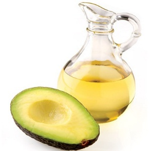
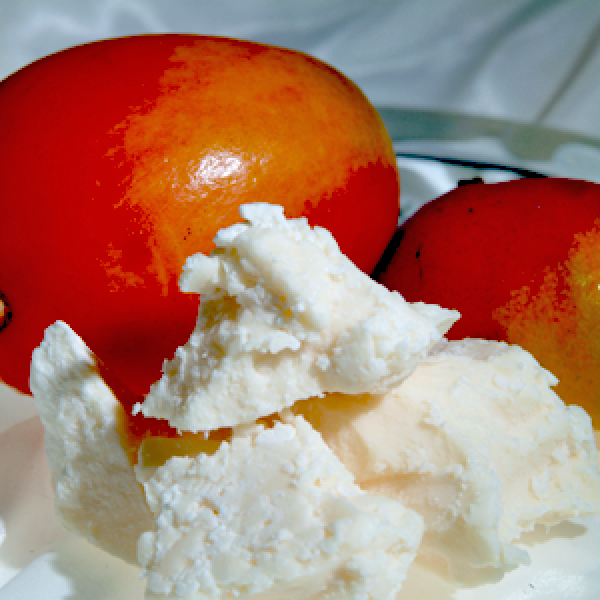
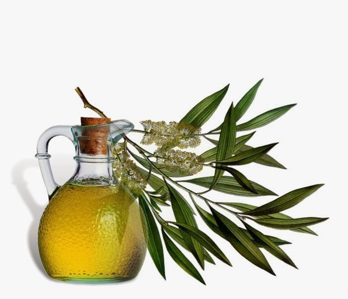

Ingredients in Our Products
FREE Canadian shipping on orders over $75.$5 flat rate shipping on orders over $50
SALE!!! Use Promo Code: SAVE25 for 25% off
Shea Butter
Shea butter is sourced from the seed of the karite tree.
Karite means “tree of life”. This wonderful gift from nature contains a
rich amount of unremovable fatty acid which is crucial for rejuvenating and
moisturizing the skin. Shea butter is an intense moisturizer and it provides
all the essential vitamins ( A, E & F) needed to make skin look and feel smoother,
softer and healthier. It contains anti-inflammatory and therapeutic properties
which helps to: protect the skin, fight the effects of aging and promote skin renewal.
Coconut Oil
Coconut oil is a type of edible oil that is extracted from matured coconut kernels.
Coconut oil contains high amounts of vitamin E, antioxidants,
proteins and triglycerides as well as lauric acid which is both a
anti-microbial and anti-bacterial. It is great moisturizer that also
strengthens skin tissue and helps eliminates dead skin cells. It also
works to protect skin from sun damage, contains anti-aging properties
and helps to improve symptoms of acne, psoriasis, and eczema. Coconut oil
is often used to preserve and promote healthy hair.
Jojoba Oil
Jojoba oil is produced from the seed of the Jojoba plant, this plant is found natively in the
regions of Southern Arizona, Southern California and Northwestern Mexico.
It has great antiviral, antibacterial and anti-inflammatory properties.
It serves as a natural emollient with skin-softening and moisturizing properties.
Jojoba oil reconditions, protects, improves skin’s texture and can even
improve dry and flaky skin types. In all natural products, Jojoba oil is commonly an ingredient in lotions,
moisturizers, hair shampoos and conditioners.
Cocoa Butter
Cocoa butter is an edible vegetable fat extracted from the cocoa bean.
Cocoa butter is known for its incredible skin nourishing properties,
including the treatment and prevention of stretch marks. It is rich in
antioxidants which help fight off free radicals. Cocoa butter is a great
emollient, adds flexibility to the skin, is soothing and contains vitamin E.
It helps the skin retain moisture, acts as a barrier for skin protection.
Rich in fat and easily absorbed by the skin, it is a great moisturizer, known
for its hydrating effects, and excellent when used on dry skin or on wrinkles.
Sweet Almond Oil
Sweet almond oil is extracted from the dried kernel of sweet almonds.
It is great for all skin types and acts as an emollient and is best
known for its ability to soften, soothe, and re-condition the skin.
It works to improve skin complexion and retain glowing skin through its deep
moisturizing abilities. It can be used to soothe skin inflammation and irritation,
as well as relieve dry and irritated skin. In addition, this oil can help
get rid of dark circles as well as reduce dark eyelids and crow’s feet.
It can also help cure dandruff by removing dead cells.
Olive Oil
Olive oil is produced by pressing whole olives. Olive oil contains Vitamin A, Vitamin E and antioxidants. It protects the
skin and penetrates deeply, this provide a moisture shield that helps
maintain smooth and supple skin. Olive oil also improves skin elasticity,
stimulates cells and makes skin firmer, smoother and healthier. It can used to remedy especially dry prone areas such as elbows and knees.
Olive oil can be used to strengthen nail cuticles.
It is also known to have lasting positive benefits when used as a conditioning treatment for hair.
Grape Seed Oil
Grape seed oil is produced by pressing grape seeds. Grape seed oil contains linoleic acid (strengthens cell membranes), which makes
grape seed oil a good solution for skin conditions such as acne. Grape seed oil contains a significantly large amount of antioxidants
which can help prevent pores from clogging. It also possesses anti inflammatory properties which can help prevent breakouts.
Regular application of grape seed oil will deliver a healthy amount of astringent, a substance that is useful
for skin tightening and toning.
Avocado Oil

This ultra rich organic oil is a delightful treasure containing high
amounts of Vitamin A, B1, B2, D, and E and other essential fatty acids.
Softens and soothes the skin, increases the production of collagen, penetrates
to the deeper layers of the skin for better moisturisation and improved skin texture.
Great for those with skin problems such as eczema, psoriasis, dry skin, ageing skin,
and other skin ailments. Highly recommended for those with sensitive skin, problem skin
and other irritations that require vitamin rich oil.
Sunflower Oil
Sunflower oil is a favorite in natural skin care because it is a
botanical alternative to synthetic emollients. It consists primarily of
linoleic acid, an omega-6 that is packed with essential vitamins A, D, K and E.
Its hydrating properties lend skin a healthy glow, promote elasticity and reduce
the appearance of wrinkles. It helps prevents dryness and roughness and is a great treatment
for skin care issues such as eczema, psoriasis and acne. Its hydrating properties lend
skin a healthy glow, promote elasticity and reduce the appearance of wrinkles.
Mango Butter

Mango butter is produced from cold pressing mango seeds. This tropical and exotic butter is incredibly rich in vitamins
and emollients. It has a very rich moisture content, and can be easily absorbed for soft and supple skin. Mango butter also
conditions and hydrates the skin giving a youthful appearance, perfect for
anti-aging. In fact, dermatologists often recommend mango butter for the treatment of wrinkles,
with daily use, noticeable reduction and disappearance of lines and wrinkles can occur in as little as 4-6 weeks.
Neem Oil

Neem oil contains high levels of antioxidants that help protect skin from environmental damage. Neem oil is high in fatty
acids and Vitamin E but it does not make the skin greasy. The high fatty acid content in this oil can prevent and treat
acne scars. It can be used as an exfoliant or facial masque.
It is excellent for dry skin and in general for all dry skin conditions, it soothes cracked and traumatised skin,
restores skin’s natural elasticity, combats spots and acne, all while promoting healthy and
even skin. In addition, neem oil can be used as an effective foot cream.
Rosehip Seed Oil
Rosehip seed oil is derived from the seeds found within rose hips. It contains vitamin C and is
excellent for skin rejuvenation. Rose hip seed oil is a
multivitamin for the skin, rich in essential fatty acids and antioxidants, it works
wonders on scars, stretch marks, dark spots, skin discolorations, fine lines, age spots
and wrinkles. Rose hip oil is also a great moisturizer for skin and can help relieve eczema,
dermatitis and psoriasis. It minimizes pores, blemishes and helps the skin to naturally regenerate.
Rosehip oil absorbs easily and is excellent for hydrating skin.
Tea Tree Oil

Tea tree oil is derived from the leaves of the tea tree, it is considered a herb. Tea tree oil is known as the skin miracle
as it has many anti-viral and anti-fungal benefits. It is the most recommended essential oil
for use in treating acne, scars and blemishes. Best for oily and Acne Prone Skin. In addition
it is used in shampoos and deodorant. It is recommended that by using only the oil, it should be used in small quantities.
Note: it should be carefully regulated how tea tree oil is applied, as it is toxic if taken by the mouth.
Tamanu Oil
Tamanu oil comes from the Tamanu tree, which is indigenous to tropical Southeast Asia.
It has been thoroughly researched, and the conclusive evidence on its ability to heal
damaged skin is overwhelming. Tamanu oil is a remarkable topical healing agent with skin healing,
anti-inflammatory, antimicrobial, antibiotic, and antioxidant properties. Its benefits are notable
for improvements on acne, scars, stretch marks, skin blemishes, cellulite, minor cuts and abrasions,
rashes, age spots, acne scars, Pssoriais, Dermatitis, Eczema, dry and damaged skin, and much more.
Vitamin E
Vitamin E is an antioxidant that is essential for the maintenance of healthy skin. It is a safe and effective answer to clearer skin.
Vitamin E has been shown to penetrate layers of the skin to promote healing. Vitamin E oil aids with
the improvement of scars, wrinkles, cuts, blemishes and is also a strong antioxidant that prevents
premature aging. Vitamin E also influences the production of collagen, a structural protein partially
responsible for the strength and elasticity of skin. Vitamin E has all around benefits, everything from hair to nails
to glowing youthful skin.
Emu Oil
Emu oil benefits are remarkable and throughout the world it’s been used as a safe and
effective natural healing treatment for burns, wrinkles, stretch marks, cuts, scars, eczema, dry skin, and
other skin irritations. Emu oil has wonderful skin care benefits. It can also be used as a moisturizer and as a
skin nourishing treatment.
Moringa Oil
Moringa oil is high in Palmitoleic, Oleic and Linoleic acids, Vitamins A and C
and unsaturated fatty acid, giving it excellent skin moisturizing properties.
It also has antiseptic and anti-inflammatory properties which help to heal minor
skin complaints such as cuts, bruises, burns, rashes. Its emollient properties help
to soften and soothe the skin, leaving it with a silky feeling.
Baobab Oil

Baobab oil is rich in vitamins A, E, and F as well as Omega 3, 6 and 9 fatty acids.
It is acclaimed for its ability to diminish fine lines and wrinkles, reduce scarring
and help ease stretch marks. Baobab oil is also an excellent skin moisturizer, which
absorbs quickly into the skin without clogging pores. It is a wonderful oil to use in
dry skin treatments as it serves as an excellent moisturizer.
Geranium Oil
Geranium oil has powerful healing qualities for the skin. This oil is used to soothe
dry skin, reduce cellulite and also helps to clear the complexions of those with
naturally oily skin.
© Lala Skin Essentials 2015. All rights reserved.